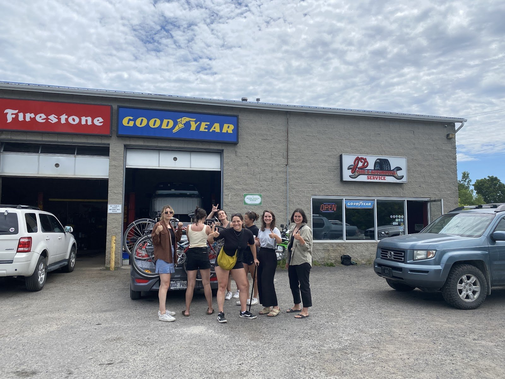
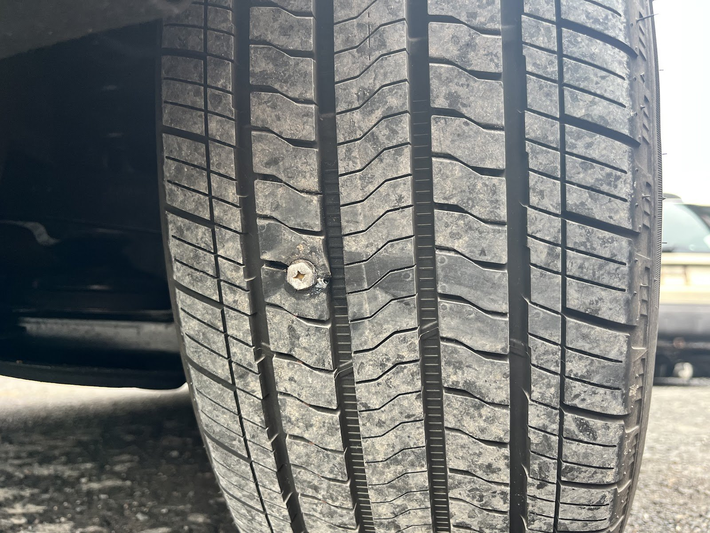

Flat tires & patches
Patched a nail in a brand-new EV the same morning; repaired a flat for $50 where a chain wanted $150 for a new tire (2022 review).
Source: Warren Griffiths, Google; 2022 Google review via exa.ai copy
Tires · repairs · Prince Edward County
A local tire and auto shop on Macsteven Drive in Picton. Flat on vacation, a warning light before a long trip, or a trailer that won’t light up: reviewers say they get you fitted in and back on the road.
Monday to Friday, 9 to 5. Call ahead; reviewers say they often fit people in same-day.

Work orders
No service menu or prices are published. Everything below comes from jobs customers describe in their Google reviews.
Patched a nail in a brand-new EV the same morning; repaired a flat for $50 where a chain wanted $150 for a new tire (2022 review).
Source: Warren Griffiths, Google; 2022 Google review via exa.ai copy
Four new tires “the same as Costco” in price but quicker; a used tire found for a stranded vacationer.
Source: Google reviews
Done alongside a tire install, in and out quickly.
Source: Google review via exa.ai copy, May 2024
Found a faulty ABS sensor that a dealer had quoted $3,200 of repairs for. The bill came to about $200 after warranty.
Source: Blair Koester, Google
Trailer brake lights traced and fixed on the spot, “they saved our camping trip.”
Source: Google review via exa.ai copy, Aug 2024
“Darrell will go out of his way to source hard to find parts.”
Source: Google review via exa.ai copy, Mar 2025

Why people come back
“Nothing to say but Wow good honest mechanics still exist. Thanks you Darrell and sons excellent stuff!”
Blair Koester, Google review
Reviewers name Darrell, Dakota and Chrystal (spellings vary between reviews).
Photos
All four photos on the shop’s Google listing, including ones customers posted with reviews. Tap to enlarge.
Reviews
4.8 ★ from 95 Google reviews (checked Oct 31, 2026). Quotes are word for word; “…” marks a trim. Named reviews were read on Google directly. “Via exa.ai copy” means a public copy of the Google listing that doesn’t show reviewer names.
★★★★★
“Great service, had a flat tire that couldn’t be fixed during vacation, found a used tire for me so I could get back home and finish the summer. Great service and price”
★★★★★
“First time I took my Pathfinder to JD. Tite & automotive. It was just a trailer brake. But they were fast and efficient. … I actually went to Nissan … gave me a list of repairs I needed totally $3,200 +Tax. … I Then took it to JD. Automotive. They figured out the ABS. Sensor was faulty. … After my third party warranty covered some costs my bill was about $200. Nothing to say but Wow good honest mechanics still exist.”
★★★★★
“We had a great experience here. Our car had an issue as we were just about to leave on a long trip, and they fixed it within 20 minutes. We were so relieved that they could fit us in and quickly diagnose the issue. This is our second visit to this mechanic and we highly recommend them.”
★★★★★
“Called JD tire and automotive this morning with a flat tire on my literally brand new Ford Mustang EV. Left a message and Dakota called me back within 30 minutes. Gave me a time to come in. In no time he figured out the problem, patched the tire and I was on my way. This man is a gem.”
★★★★★
“We are from out of town visiting our son and needed to have repairs made to the body of our car to be able to get back home. Darrell did an excellent job and had it done right away. The price was surprisingly affordable.Thanks for the great job you did. Dave and Lynn Hoy”
★★★★★
“Daryl and Dakota consistently do a standup job. Super honest and communicative. Wouldn’t take my car anywhere else in the County.”
★★★★★
“Great service from initial contact through to the end of the job. I had four new tires installed, and an oil change done. My schedule was tough, but Chrystal accommodated my needs and I was in and out quickly. I needed high end tires. The price was the same as Costco, but service was quicker and hassle free. It's great to support small businesses while getting incredible value for your time and money”
★★★★★
“Required immediate help with our trailer brake lights. They tested our Jeep on the spot and found the problem and corrected it within minutes. They saved our camping trip. The kindest and most resourceful mechanics we have ever been too. Thanks JD Automotive. Highly recommended!!!”
★★★★★
“We had a problem with the car and he fixed it super quick! Super service! Really recommend”
Hours from the Google listing (checked Oct 31, 2026).
2 Macsteven Dr
Picton, ON K0K 2T0
Wheelchair-accessible parking (per Google).
Phone from the Google listing. The shop’s only web presence is a Facebook page.